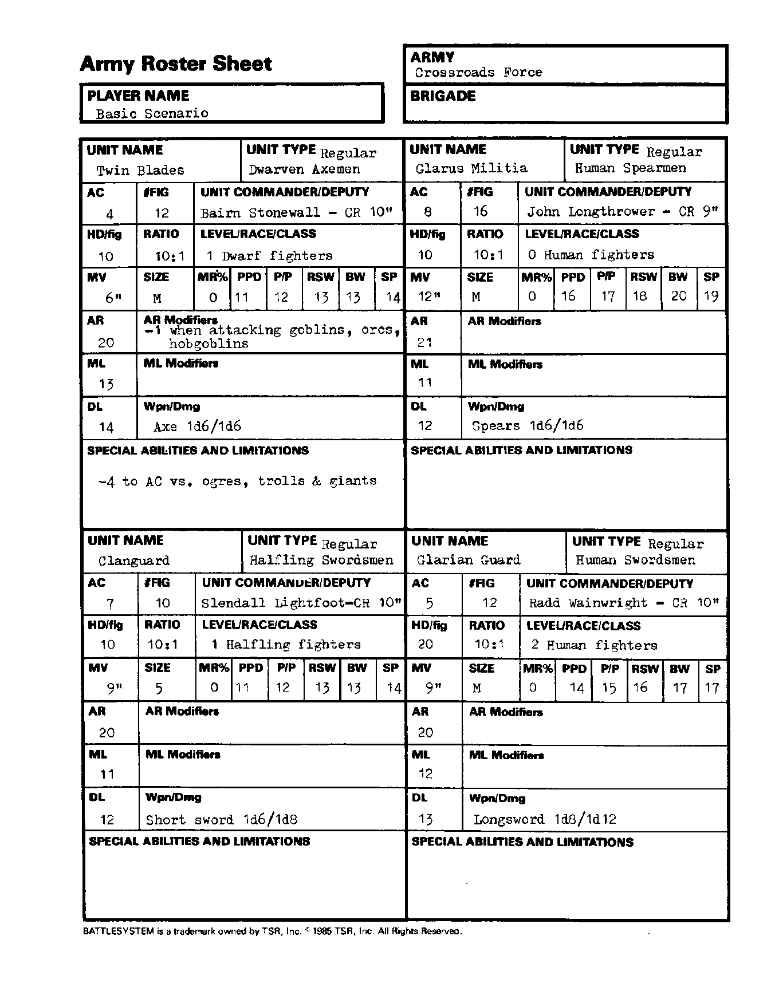

十字路口守军 Crossroads Force：军队部队
能力值顺序：力量／智力／感知／敏捷／体质／魅力。五项豁免依次为麻痹·毒素·死亡魔法／石化·变形／法杖·法棒·魔杖／吐息／法术。移动与指挥半径以桌面英寸计；“—”表示原卡空白或不适用。武器两种伤害分别针对 S/M 与 L 目标；特殊多次攻击另行注明。
双刃 Twin Blades
| 项目 | 数值 |
|---|---|
| 部队类型 | 正规：矮人斧兵 |
| 护甲等级 AC | 4 |
| 模型数 FIG | 12 |
| 指挥官／副官 | Bairn Stonewall，CR 10 |
| 每模型生命骰 HD/fig | 10 |
| 生物／模型比例 | 10:1 |
| 等级／种族／职业 | 1 级矮人战士 |
| 移动率 MV | 6 |
| 体型 | M |
| 魔法抗性 MR | 0% |
| 五项豁免 | 11/12/13/13/14 |
| 攻击等级 AR | 20 |
| AR 修正 | 攻击地精、兽人、大地精 AR −1。 |
| 士气等级 ML | 13 |
| ML 修正 | — |
| 纪律等级 DL | 14 |
| 武器／伤害 | 斧 1d6／1d6 |
| 特殊能力与限制 | 对食人魔、巨魔、巨人 AC −4。 |
格拉鲁斯民兵 Glarus Militia
| 项目 | 数值 |
|---|---|
| 部队类型 | 正规：人类矛兵 |
| 护甲等级 AC | 8 |
| 模型数 FIG | 16 |
| 指挥官／副官 | John Longthrower，CR 9 |
| 每模型生命骰 HD/fig | 10 |
| 生物／模型比例 | 10:1 |
| 等级／种族／职业 | 0 级人类战士 |
| 移动率 MV | 12 |
| 体型 | M |
| 魔法抗性 MR | 0% |
| 五项豁免 | 16/17/18/20/19 |
| 攻击等级 AR | 21 |
| AR 修正 | — |
| 士气等级 ML | 11 |
| ML 修正 | — |
| 纪律等级 DL | 12 |
| 武器／伤害 | 矛 1d6／1d6 |
| 特殊能力与限制 | — |
氏族卫队 Clanguard
| 项目 | 数值 |
|---|---|
| 部队类型 | 正规：半身人剑士 |
| 护甲等级 AC | 7 |
| 模型数 FIG | 10 |
| 指挥官／副官 | Slendall Lightfoot，CR 10 |
| 每模型生命骰 HD/fig | 10 |
| 生物／模型比例 | 10:1 |
| 等级／种族／职业 | 1 级半身人战士 |
| 移动率 MV | 9 |
| 体型 | S |
| 魔法抗性 MR | 0% |
| 五项豁免 | 11/12/13/13/14 |
| 攻击等级 AR | 20 |
| AR 修正 | — |
| 士气等级 ML | 11 |
| ML 修正 | — |
| 纪律等级 DL | 12 |
| 武器／伤害 | 短剑 1d6／1d8 |
| 特殊能力与限制 | — |
格拉鲁斯卫队 Glarian Guard
| 项目 | 数值 |
|---|---|
| 部队类型 | 正规：人类剑士 |
| 护甲等级 AC | 5 |
| 模型数 FIG | 12 |
| 指挥官／副官 | Radd Wainwright，CR 10 |
| 每模型生命骰 HD/fig | 20 |
| 生物／模型比例 | 10:1 |
| 等级／种族／职业 | 2 级人类战士 |
| 移动率 MV | 9 |
| 体型 | M |
| 魔法抗性 MR | 0% |
| 五项豁免 | 14/15/16/17/17 |
| 攻击等级 AR | 20 |
| AR 修正 | — |
| 士气等级 ML | 12 |
| ML 修正 | — |
| 纪律等级 DL | 13 |
| 武器／伤害 | 长剑 1d8／1d12 |
| 特殊能力与限制 | — |
兵力卡原图
